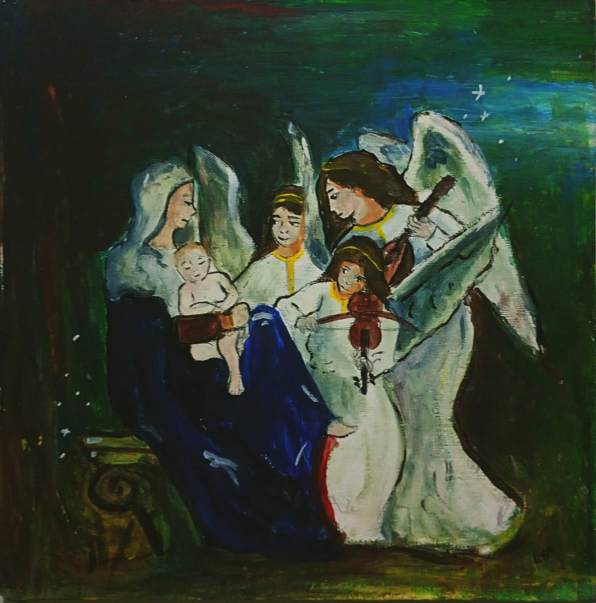
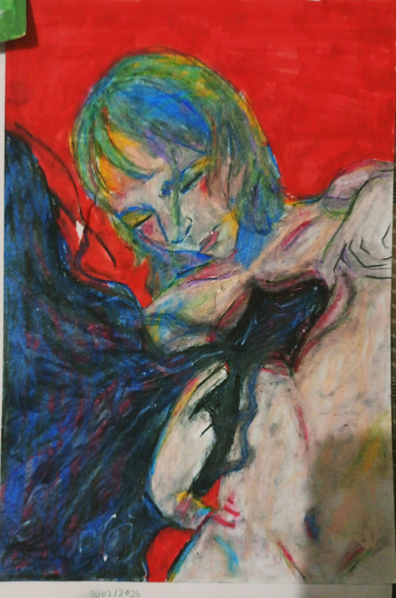
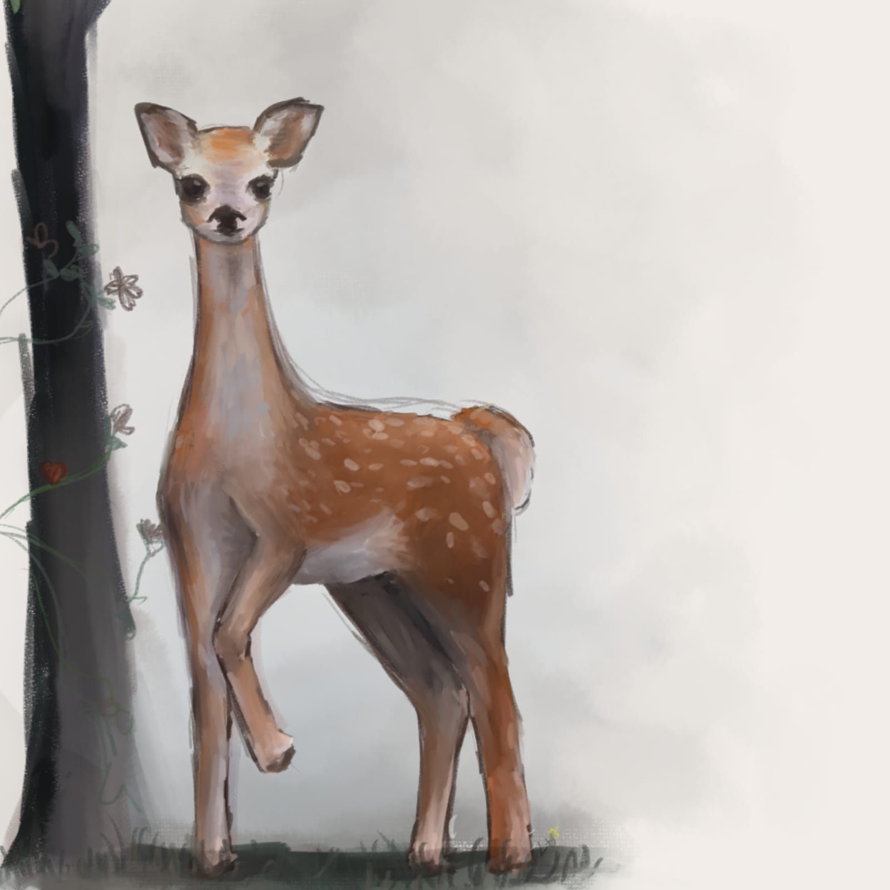
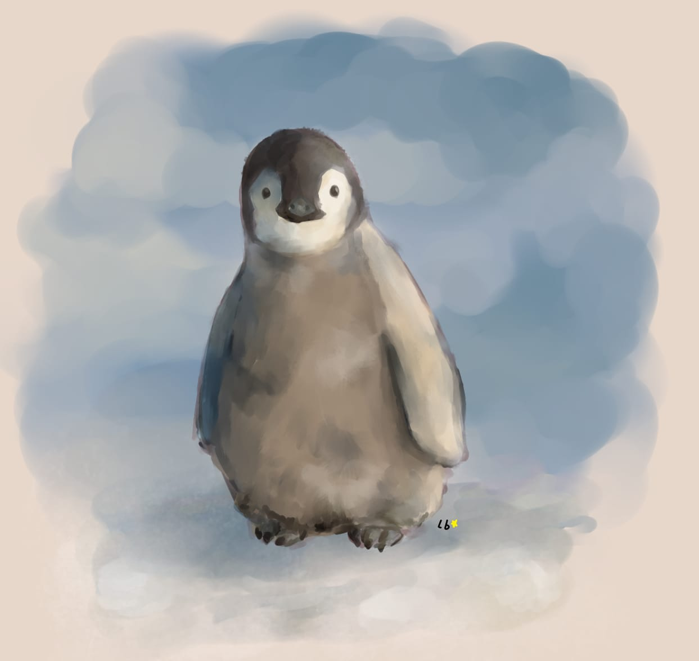
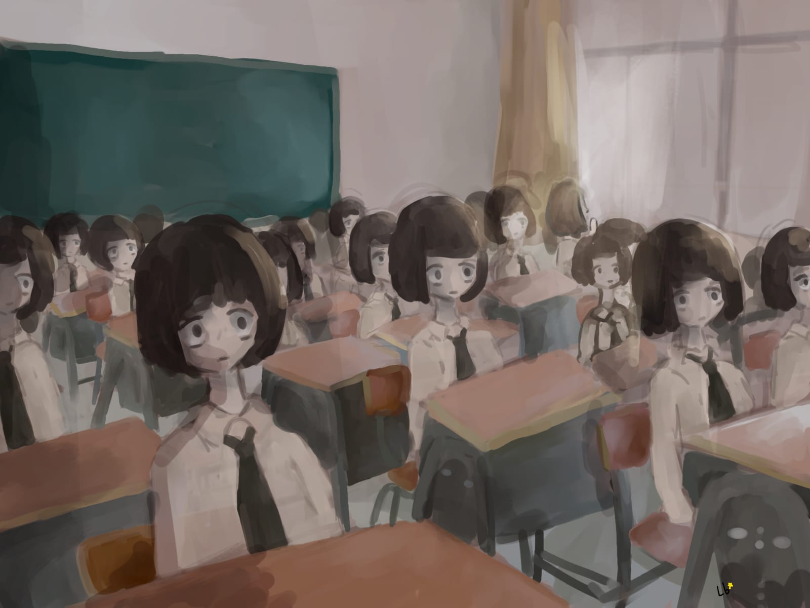
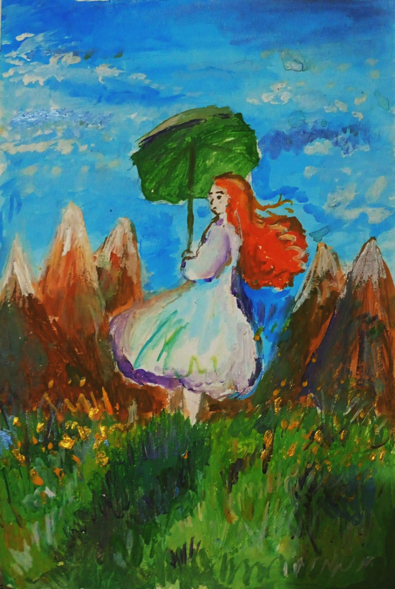
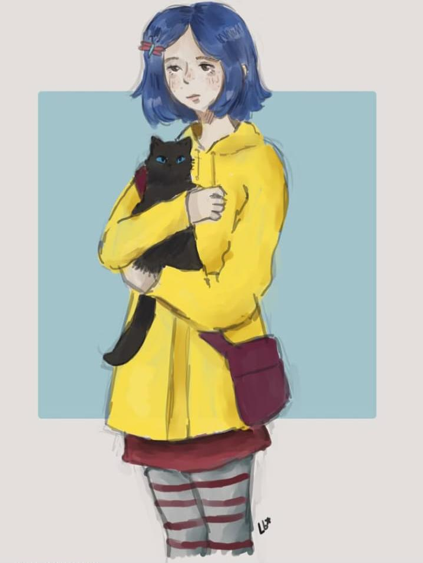
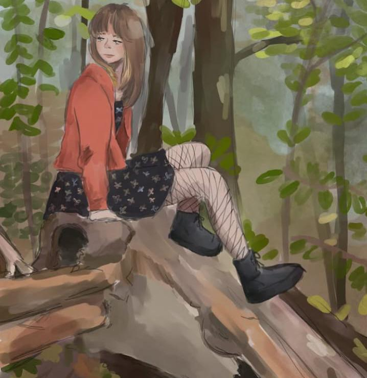

Giz pastel oleoso sobre folha 150g

Anjos cantam para menino Jesus aos braços de Maria - Acrílica + óleo sobre tela

Giz pastel oleoso em folha A4 150g

Estudo de pintura digital feito em 2022

Estudo de pintura digital feito em 2022

Desenho digital (2022)

Releitura de Claude Monet - Estudo ( Acrílico )

Desenho digital (2023)

Estudo
Emily Calixto é uma artista apaixonada pela arte em todas as suas formas, especialmente pelo desenho e pela pintura. Desde muito nova, encontrou na arte uma forma de expressão, desenvolvendo ao longo dos anos uma grande experiência tanto com desenhos físicos quanto digitais.
Seu trabalho é marcado pela criatividade, dedicação e sensibilidade artística, qualidades que a levaram a produzir diversas pinturas personalizadas e commissions digitais para clientes. Cada obra carrega não apenas técnica, mas também emoção e identidade própria.
Além das ilustrações e pinturas, Emily também possui experiência com animação, tendo produzido animações para canais no YouTube e projetos pessoais feitos por hobby, sempre explorando novas maneiras de dar vida às suas ideias através da arte. A música também faz parte de sua criatividade, compondo canções como forma de expressão artística e inspiração pessoal.
Suas obras já foram exibidas em exposições artísticas, recebendo reconhecimento de diversos artistas ao longo de sua trajetória. Emily também teve a oportunidade de estudar e ter aulas com o artista Ca Cau, ampliando ainda mais sua visão artística e experiência criativa. Além disso, ela frequenta exposições e eventos artísticos regularmente, buscando novas referências, inspirações e contato constante com diferentes formas de expressão artística.
Atualmente, Emily trabalha na Tapera das Artes, onde vive a arte diariamente através da criação de peças de cerâmica, pintura de instrumentos e elaboração de quadros. Sua rotina é cercada por criatividade, aprendizado constante e paixão pelo que faz, transformando ideias e sentimentos em obras únicas.